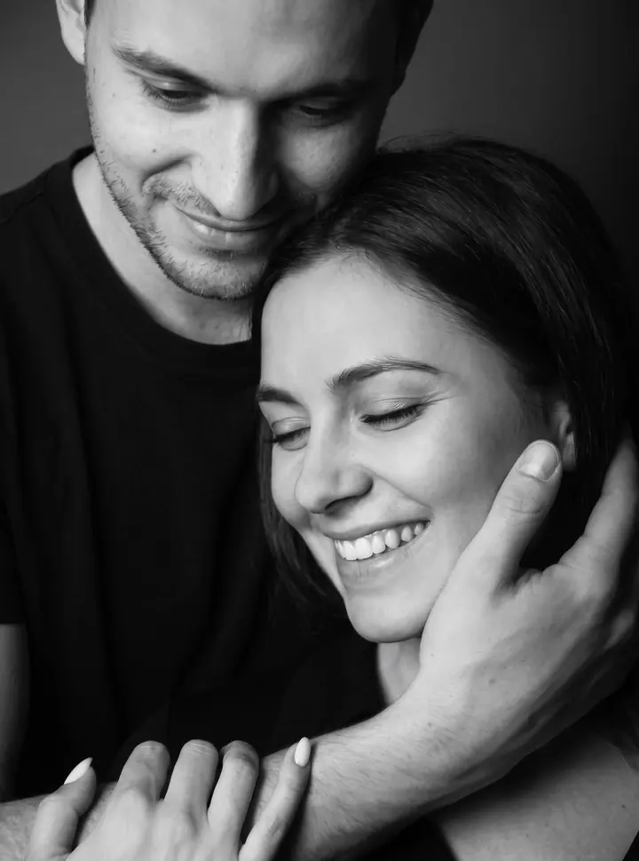
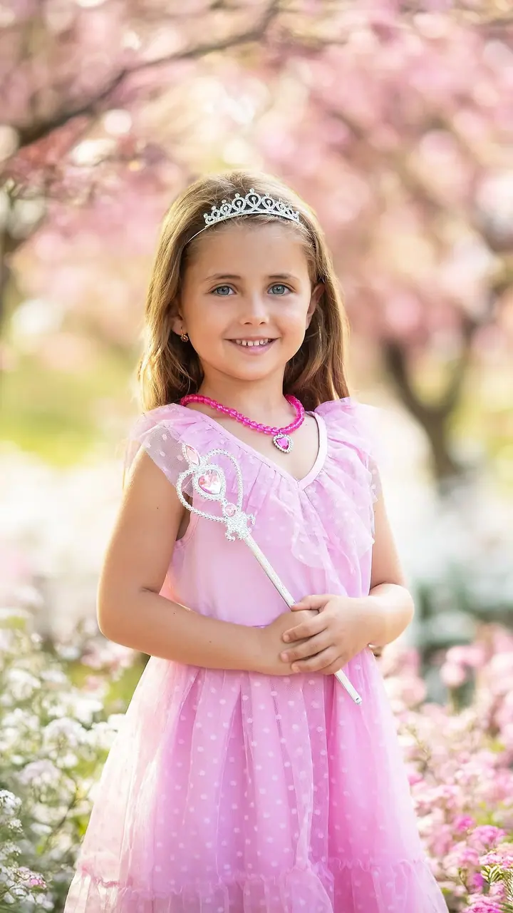
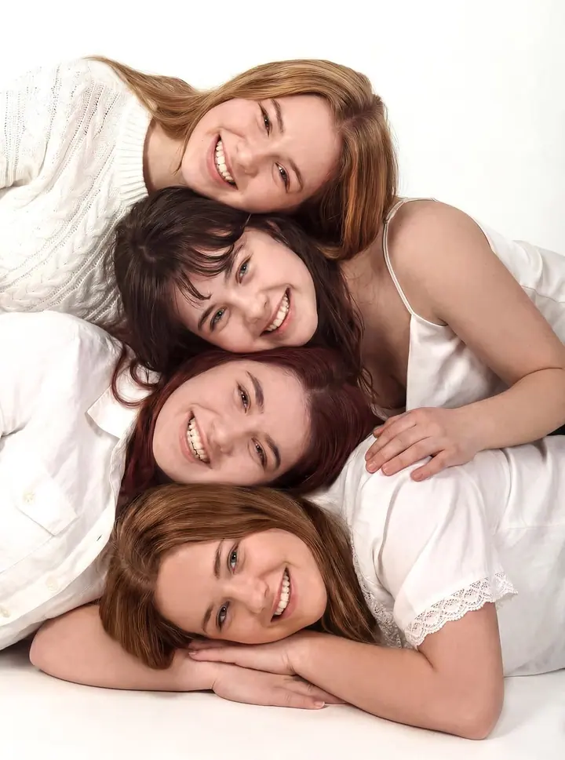
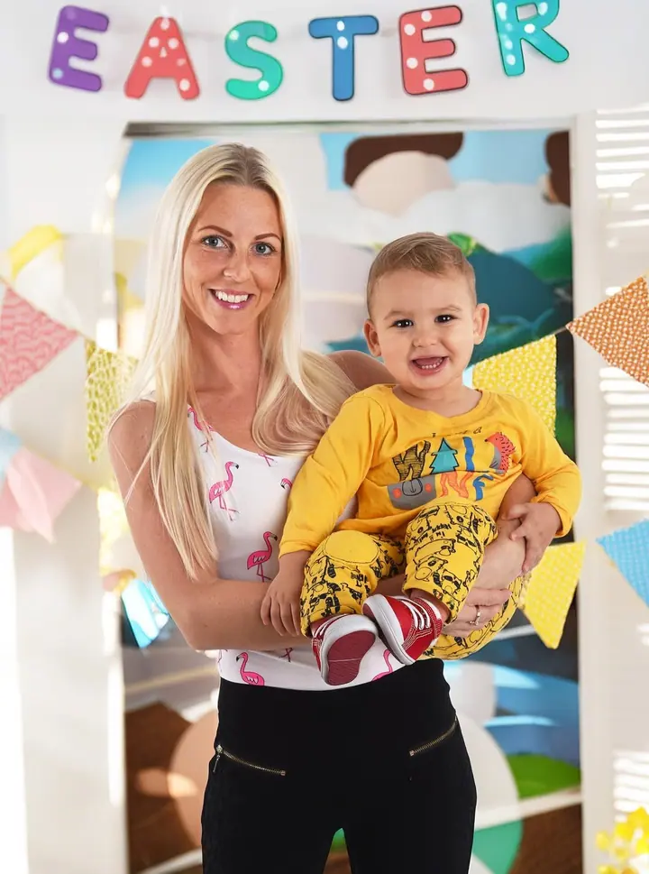
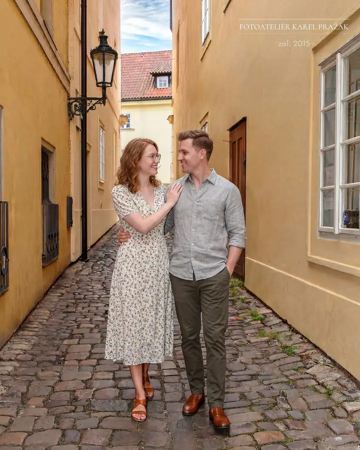
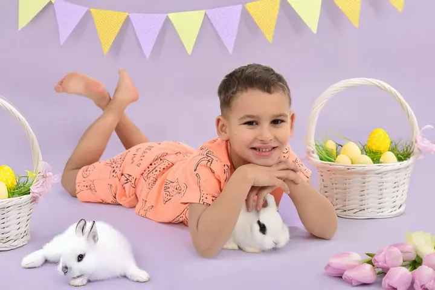

Rodinná fotografie
Rodinné focení v ateliéru nebo venku a v sezóně také vánoční rodinné focení. Fotím celé rodiny, sourozence i děti v tematických dekoracích.





Jmenuji se Karel Pražák a v roce 2015 jsem založil svůj fotoateliér. Fotím rodiny, maminky v očekávání i novorozence, v ateliéru i venku. Při focení mám nejradši lidskost a přirozenou přátelskou atmosféru.
Více o mně
„Při focení mám rád lidskost a přirozenou přátelskou atmosféru.“
— Karel Pražák
Rodinné focení v ateliéru nebo venku a v sezóně také vánoční rodinné focení. Fotím celé rodiny, sourozence i děti v tematických dekoracích.
Focení novorozenců v prvních dnech života, samotných i v náručí rodičů. Kvůli narození vlastního syna mě tahle fotografie chytila za srdce.
Profesní portréty pro web, sociální sítě a firemní prezentaci. Fotím v ateliéru i venku v městském prostředí.
Těhotenské focení v ateliéru nebo venku v přírodě. Klidně s partnerem, aby fotky zachytily čekání na miminko z pohledu vás obou.
Vyrostl jsem v Praze na Malé Straně a fotografie mě provází už od dětství. V sedmnácti letech jsem se dostal mezi klubové a festivalové reportážní fotografy a začínal jsem v hudebních klubech, kde je světlo opravdu náročné. Později jsem fotil i firemní akce a interiéry.
Po deseti letech reportáží mě to táhlo k ateliérové fotografii, a tak jsem v roce 2015 založil svůj fotoateliér. V té době se mi narodil syn a to mě natolik ovlivnilo, že jsem se začal věnovat hlavně těhotenské, rodinné a novorozenecké fotografii.
Pro sebe fotím street, který beru jako svou osobní meditaci. V březnu 2016 jsem pod záštitou Prahy 1 vystavoval soubor „Když ulice promluví…“ a v roce 2025 vznikl samostatný projekt z pražské Malé Strany. Mám za sebou dvacet let praxe a rád se nechám inspirovat i vašimi představami a nápady.
Napíšete mi, co si představujete, a společně vybereme typ focení, termín a jestli budeme fotit v ateliéru nebo venku.
Poradím vám s oblečením a připravím pozadí a dekorace, aby celé focení sedělo k vám a vaší rodině.
Fotíme v klidu a bez spěchu, v přátelské atmosféře. Na dětech ani miminkách nic nelámeme.
Z hotových fotek si vyberete své oblíbené, já je pečlivě upravím. Pokud chcete, můžu vám je vytisknout i jako fotoobrazy.
Ne. Těhotenské i rodinné focení nabízím také ve venkovní variantě, třeba v parku nebo v ulicích.
Ano, v sezóně připravuji vánoční rodinné focení v ateliéru se slavnostní dekorací.
Ano, nabízím dárkové poukazy. Hodí se na Vánoce, k narozeninám nebo pro budoucí maminku.
Aktuální ceny a příplatkové služby, jako jsou prémiová fotopozadí nebo autorský tisk fotoobrazů, najdete v ceníku na mém webu.
info@karelprazak.net
Praha · Malá Strana